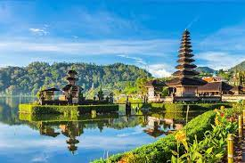

disebut juga dengan Negara Kesatuan Republik Indonesia (NKRI, pengucapan bahasa Indonesia: [nəˈɡara kəsaˈt̪ua̯n reˈpublɪk in.ˈdo.nɛ.sja]); atau hanya Republik Indonesia (RI) adalah negara di Asia Tenggara yang dilintasi garis khatulistiwa dan berada di antara daratan benua Asia dan Australia, serta antara Samudra Pasifik dan Samudra Hindia. Indonesia adalah negara kepulauan terbesar di dunia yang terdiri dari 17.504 pulau.[15] Nama alternatif yang biasa dipakai adalah Nusantara.[16] Dengan populasi mencapai 270.203.917 jiwa pada tahun 2020,[17] Indonesia adalah negara berpenduduk terbesar keempat di dunia dan negara yang berpenduduk Muslim terbesar di dunia, dengan penganut lebih dari 230 juta jiwa.[18][19]
Bentuk negara Indonesia adalah negara kesatuan dan bentuk pemerintahan Indonesia adalah republik, dengan Dewan Perwakilan Rakyat, Dewan Perwakilan Daerah dan Presiden yang dipilih secara langsung. Ibu kota negara Indonesia adalah Jakarta. Indonesia berbatasan darat dengan Malaysia di Pulau Kalimantan dan Pulau Sebatik, dengan Papua Nugini di Pulau Papua dan dengan Timor Leste di Pulau Timor. Negara tetangga lainnya adalah Singapura, Filipina, Australia, dan wilayah persatuan Kepulauan Andaman dan Nikobar di India. Sejarah Indonesia banyak dipengaruhi oleh bangsa lainnya. Kepulauan Indonesia menjadi wilayah perdagangan penting sejak abad ke-7, yaitu sejak berdirinya Kerajaan Sriwijaya, sebuah kemaharajaan Hindu-Buddha yang berpusat di Palembang. Kerajaan Sriwijaya ini menjalin hubungan agama dan perdagangan dengan Tiongkok dan India, juga dengan bangsa Arab. Kerajaan-kerajaan beragama Hindu dan/atau Buddha mulai tumbuh pada awal abad ke-4 hingga abad ke-13 Masehi, diikuti para pedagang dan ulama dari jazirah Arab yang membawa agama Islam sekitar abad ke-8 hingga abad ke-16, serta kedatangan bangsa Eropa pada akhir abad ke-15 yang saling bertempur untuk memonopoli perdagangan rempah-rempah Maluku semasa era penjelajahan samudra. Setelah berada di bawah penjajahan Belanda selama hampir 3 abad, Indonesia yang saat itu bernama Hindia Belanda menyatakan kemerdekaannya di akhir Perang Dunia II, tepatnya tanggal 17 Agustus 1945. Selanjutnya, Indonesia mendapat berbagai tantangan dan persoalan berat, mulai dari seringnya terjadi bencana alam, praktik korupsi yang masif, konflik sosial, gerakan separatisme, proses demokratisasi, dan periode pembangunan, perubahan dan perkembangan sosial-ekonomi-politik, serta modernisasi yang pesat.
Dari Sabang di ujung Aceh sampai Merauke di tanah Papua, Indonesia terdiri dari berbagai suku bangsa, bahasa, dan agama. Berdasarkan rumpun bangsa (ras), Indonesia terdiri atas bangsa asli pribumi yakni Mongoloid Selatan/Austronesia dan Melanesia di mana bangsa Austronesia yang terbesar jumlahnya dan lebih banyak mendiami Indonesia bagian barat. Secara lebih spesifik, suku bangsa Jawa adalah suku bangsa terbesar dengan populasi mencapai 41,7% dari seluruh penduduk Indonesia.[20] Semboyan nasional Indonesia, "Bhinneka tunggal ika" ("Berbeda-beda namun tetap satu"), bermakna keberagaman sosial-budaya yang membentuk satu kesatuan/negara. Selain memiliki populasi penduduk yang padat.